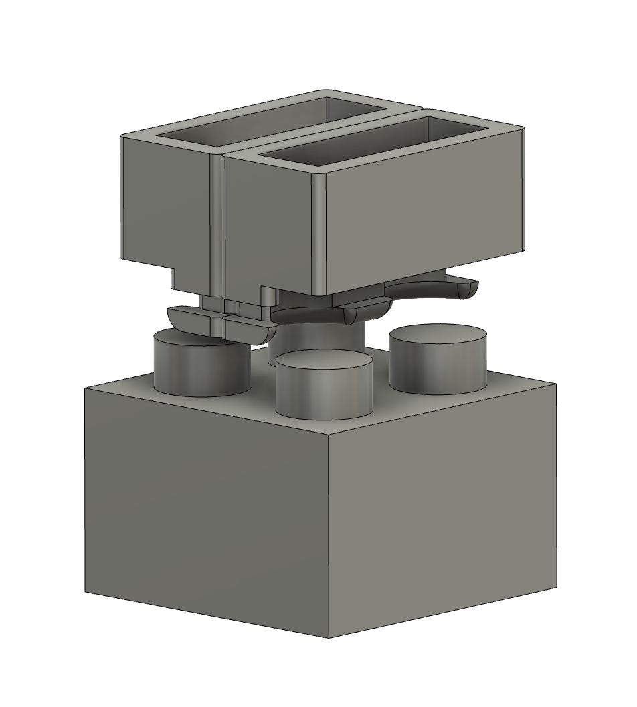
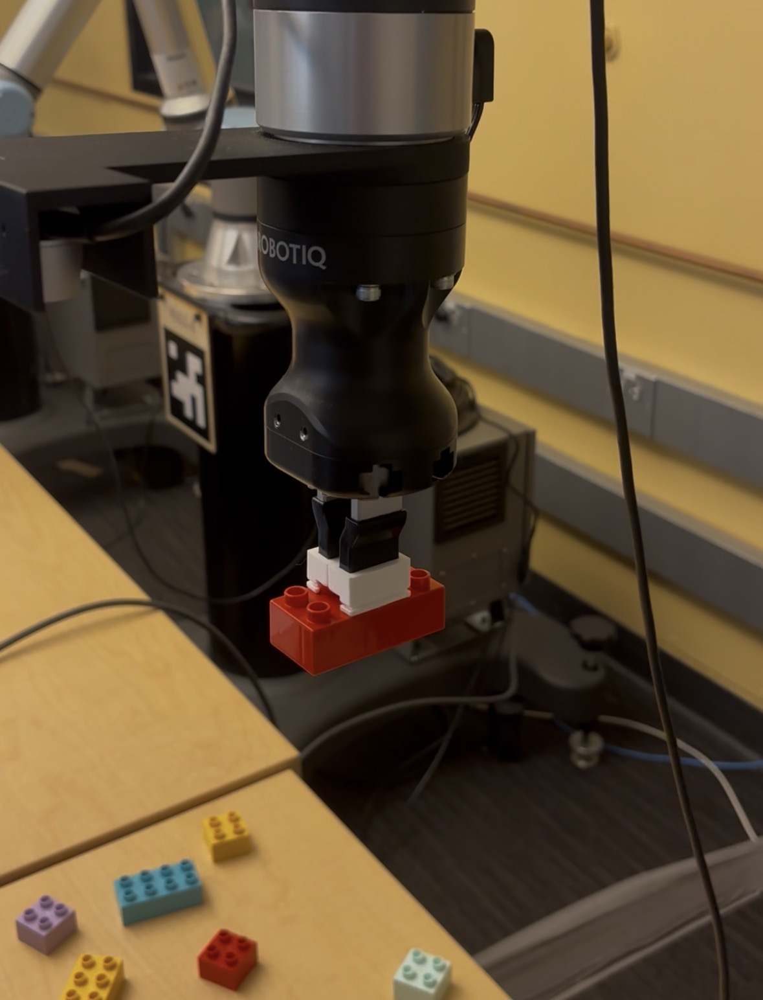
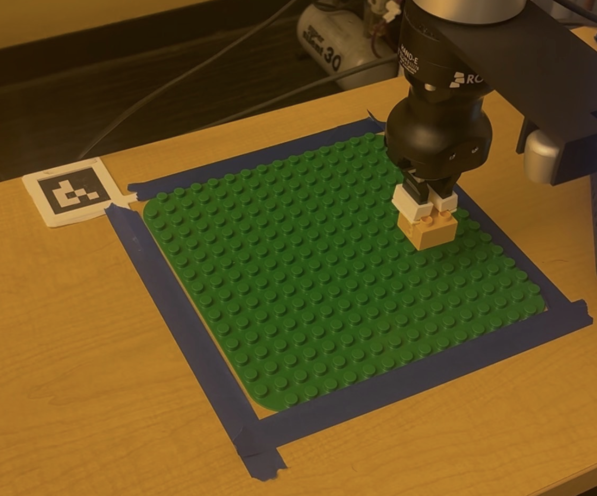
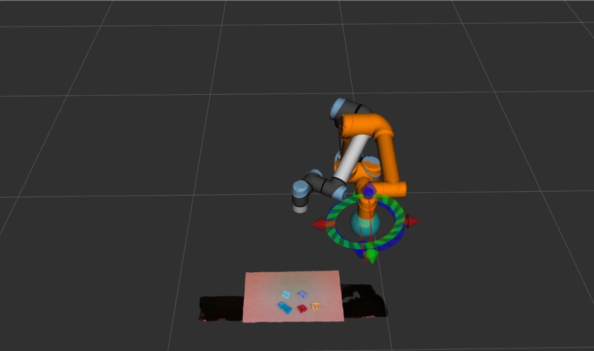
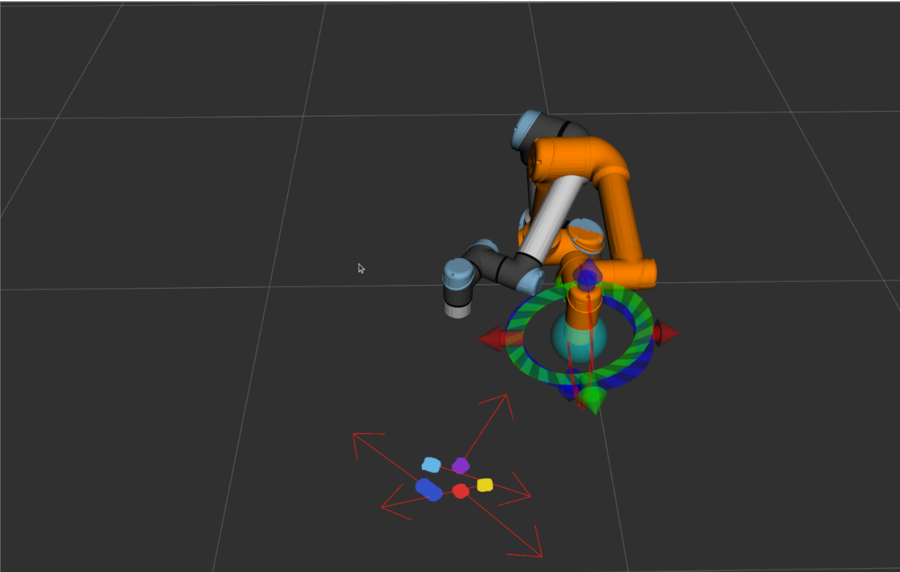

Implementation
Hardware
Our setup centers on the UR7e robotic arm, which provides the reach and precision needed to pick bricks from anywhere on the table and place them onto the build plate. A RealSense depth camera is mounted above the workspace, providing both the RGB image and the organized point cloud that the detection node relies on. The build surface is a standard 16×16 stud Duplo baseplate, fixed to the table with an ArUco marker jig 3D printed to sit flush at the corner — this gives the robot a repeatable coordinate frame for the build area at startup.
The most significant custom fabrication was the end-effector gripper. It is a 3D printed vice-clamp style tool that pinches the top studs of each brick from the outside. Because the gripper contacts only the studs and not the sides of the brick, it can lower onto a brick that is already surrounded by neighbors without colliding with them. Several iterations were needed to dial in the finger geometry and compliance — early prints were too rigid and would either miss the studs or crack them; the final design has a slight flex in the fingers to tolerate small positioning errors from the CV system.



Module 1 — Interactive Website and Slicing
The website effectively functions as our project's user interface. Through the website, the user builds their Lego set and then just sends it to the robot, which then builds their set brick for brick. To the user, everything else is a black box. To us, it is the beginning of a long series of steps to get the user's Lego set into the real world. After the user clicks the "Send to Robot" button, the website slices the build, not dissimilar to how slicing software works for a 3D print. The slicer looks at what the user has built and orders each brick by how high above the build plate its studs will be. Then it orders them from left to right, back to front, before sending the sequence to the robot as a JSON file. The brick type, color, location, and orientation are all encoded in the JSON file so the robot knows exactly which brick to pick up, in which order, and where to place it on the build plate.
While the website was a core portion of the functionality of our project, we didn't put as many hours into it compared to the other modules. The core purpose of this project was still to exercise and further our knowledge in ROS 2 and robotics engineering, so making the website as water-tight as possible wasn't high on our list of priorities. As such, once the website was capable of keeping track of and placing every type of brick available to us and correctly exporting an ordered list of bricks for the robot to read, we left it as it was. If you go poke around the builder you might notice some... peculiar behaviour from some of the bricks, especially when you try to rotate some of the funkier shapes.
Module 2 — Brick Detection and Pose Estimation
The detection node takes the RealSense point cloud and RGB stream as input and outputs the 6-DOF pose, color, shape, and height of every brick visible on the table. The pipeline runs as follows:
- Baseplate localization: On startup, the node attempts ArUco detection on the RGB image using 6 parameter combinations with varying CLAHE preprocessing and threshold windows to handle the weak, uneven lighting in the 106A lab. Once the marker is detected across 3 consecutive frames, the baseplate's position is averaged and locked as a static TF frame (
baseplate_frame). If ArUco fails entirely, the node falls back to HSV segmentation of the green baseplate surface. - Point cloud filtering: The organized point cloud is transformed into
baseplate_framecoordinates. Points are then filtered to only those within the XY footprint of the build area (plus a 20 mm margin) and within a Z band above the table surface but below the tallest possible brick. This eliminates the robot arm, table edges, and background clutter before any clustering. - Voxel downsampling & DBSCAN clustering: The filtered cloud is voxel-downsampled at 2 mm resolution for speed, then clustered with DBSCAN (ε = 12 mm, min points = 10). DBSCAN was chosen because it does not require specifying the number of bricks in advance and naturally rejects noise as unclustered points.
- Per-cluster classification: Each cluster is classified independently. Color is determined by converting the cluster's point colors from BGR to LAB space and matching against pre-tuned LAB ranges for 11 colors — any cluster where fewer than 40% of points match a color is discarded as noise or glare. Shape and yaw are estimated by running PCA on the XY extent of the cluster: the long and short axes are divided by the 16 mm Duplo stud pitch to get stud counts, which are snapped to the four valid brick shapes (1×2, 2×2, 2×4, 2×6). The angle of the PCA long axis gives the brick's yaw, handling arbitrary off-grid rotations. Height is estimated from the 90th-percentile Z value of the cluster and classified as half, normal, or tall.
- Pose publication: Each detected brick's centroid (median of top-surface points) and orientation are transformed into
base_linkframe and published as aPoseArrayalongside a JSON metadata string containing color, shape, and height type for the planning node to consume.



The most time-consuming part of this module was color tuning. The LAB color ranges for each brick had to be calibrated against the 106A lab's lighting specifically, as the same brick looks meaningfully different under different illumination. We built a separate HSV/LAB tuner tool to capture live frames and interactively adjust the ranges until all 10 colors were reliably distinguished. The trickiest pairs were orange/red and light blue/mint, which required tightening the ranges significantly — at the cost of occasionally dropping detections on bricks hit by a strong specular reflection.
Module 3 — Path Planning and Inverse Kinematics
Describe the third major software module. How does it use the outputs of the previous modules? What ROS nodes, APIs, or frameworks does it rely on?
Explain any interesting challenges or obstacles, briefly describe what didn't work and why.
System Pipeline
With each module developed, the end-to-end pipeline works as follows:
- Receive New Build: The planning node polls JSONBin for the latest build plan — a JSON array of bricks ordered by the website's slicer.
- Plan Build Order: The pre-sorted sequence is validated and loaded into memory. Bricks are already ordered bottom-up, left-to-right, back-to-front by the website slicer, so no re-sorting is needed on the robot side.
- Scan ArUco Tag: The ArUco node detects the alignment marker on the baseplate jig, averages 30 pose samples, and publishes a locked
baseplate_frameTF into the ROS 2 transform tree — establishing a fixed coordinate frame for the build area. - Scan For Next Brick: The brick detector node captures a RealSense depth frame, segments the point cloud to isolate the target brick by color and shape, and estimates its position and yaw relative to
base_link. - Pick Up Brick: The IK node computes a pre-grasp approach trajectory, descends, closes the gripper around the brick studs in a vice-clamp grip, then lifts to a safe carry height.
- Place Brick onto Build Plate: Using the
baseplate_frameTF and the current step's grid position and rotation from the build plan, the IK node computes the target placement pose and deposits the brick onto the plate. - Repeat: Advance to the next brick in the sequence and return to Step 4 until all bricks are placed.